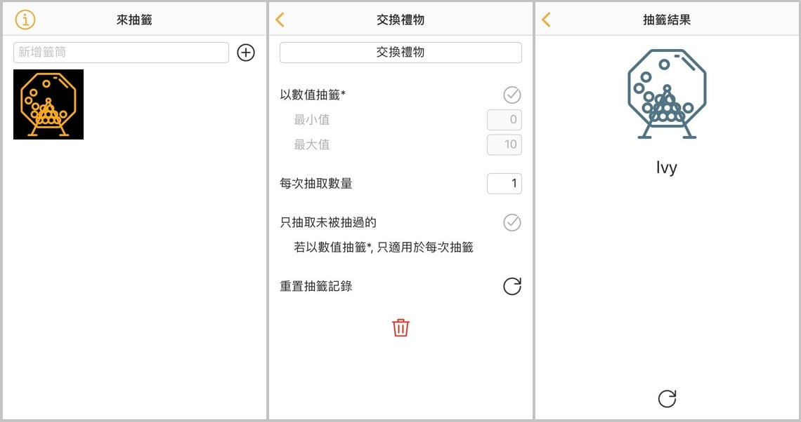
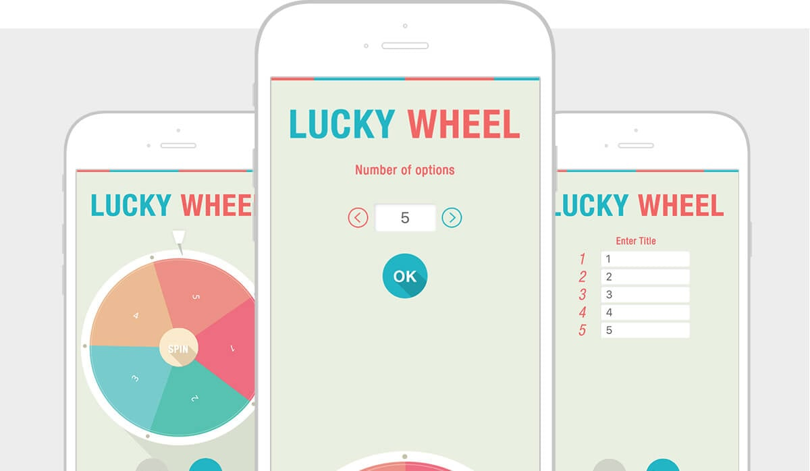
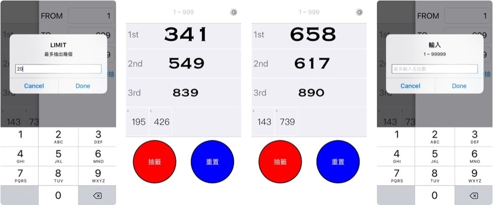
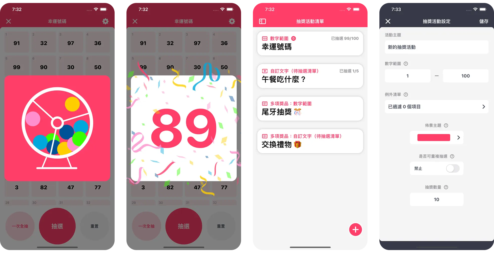
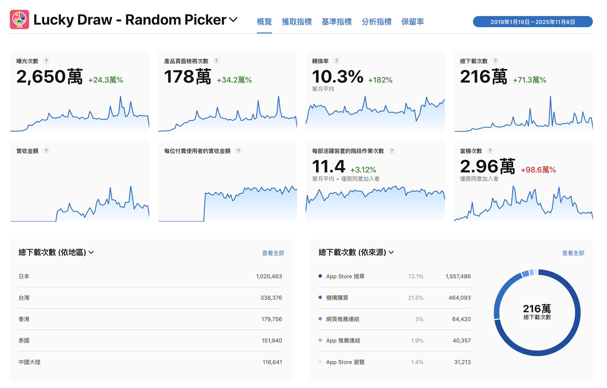

Lucky Draw – Raffle App Design
It actually started as a small side game for our company’s annual party. Another iOS developer and I had to create a Bingo and lucky draw app within just a few days, using our free time outside of work. The goal was simply to let our colleagues play during the event — but to our surprise, after the app was launched, the number of downloads far exceeded our expectations!
• Over 8,075 reviews
• Used by a popular Japanese YouTuber for live-stream giveaways
TIMELINE
- 2019/1
- 3 days
TEAM
- 1 PD (I'm here!)
- 1 FE
- 2 QA (I'm here!)
ROLE
- Mockup
- testing
TOOLS
- Figma
- Illustrator
- Slack
- Notion
About the Project

As part of the startup Astra, I was gearing up for the most anticipated winter event—our year-end party (second only to Christmas, of course). At Astra, there’s a special tradition: whoever wins the grand prize becomes the planner and host for the following year’s celebration.
My good friend Timmy, an imaginative iOS engineer and last year’s grand prize winner, came up with the idea of designing an app that would let everyone play Bingo and Lucky Draw during the event. When he invited me to design it with him, I gladly said yes without hesitation.
With only a few days outside of work hours, we teamed up to turn this fun idea into reality — and that’s how this project began.
Competitor Analysis
At first, we searched online for an existing website or app that we could use directly. There were plenty of lottery apps out there, but few with good aesthetics. Even the better-looking ones lacked a fun, festive vibe—or were filled with annoying ads that kept interrupting the event. So, when we couldn’t find the right tool, we decided to build our own!
1. The interface was simple but plain, lacking a festive atmosphere and not meeting our needs.
2. The interface used a roulette-style animation that wasn’t smooth, and frequent full-screen ads kept popping up, making it unsuitable for our needs.
3. The interface was simple but plain, lacking a festive atmosphere and not meeting our needs.
Refine Goals
Playful Style
- Cheerful and vibrant colors
- Lottery animations designed to create a fun, festive atmosphere
Multiple Draw Modes
Allow users to switch between different draw types:
- Number draw
- Custom text draw
- Multi-item lottery mode
Must Include Sound Effects
- Sound effects enhance the tension and excitement before the draw
- They also amplify the celebratory feeling when the result is revealed
Results
Not only did the app make the year-end party night smooth and fun, but the Lucky Draw App also allowed everyone to play Bingo and participate in the lucky draw for various grand prizes. The day after the event, we even launched the app on the App Store.
Surprisingly
The downloads for Lucky Draw have continued to grow steadily — and they’re coming from all around the world! It seems like my creation is especially popular among users in Japan! 😝
